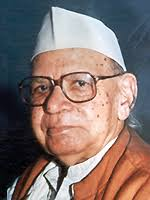

विष्णु प्रभाकर (21 जून 1912, मीरानपुर - 11 अप्रैल 2009, नई दिल्ली) हिन्दी के सुप्रसिद्ध लेखक थे जिन्होने अनेकों लघु कथाएँ, उपन्यास, नाटक तथा यात्रा संस्मरण लिखे। उनकी कृतियों में देशप्रेम, राष्ट्रवाद, तथा सामाजिक विकास मुख्य भाव हैं। इसके साथ ही उनका व्यंग्य "बाबूजी बारात में" काफी प्रचलित है।
| रचना का नाम | रचना का प्रकार |
|---|---|
| बाबूजी बारात में | व्यंग्य |